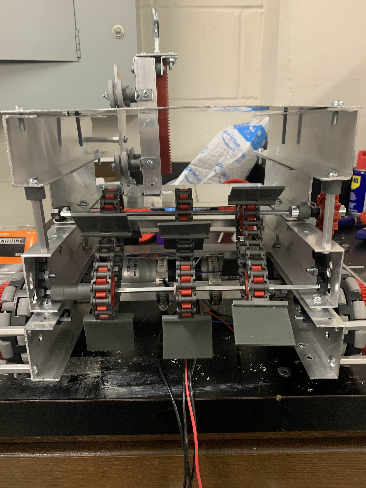
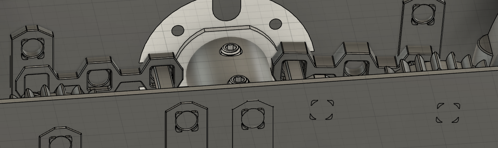
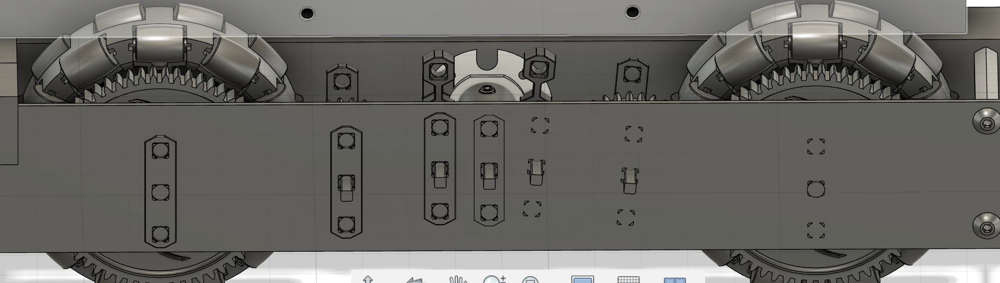
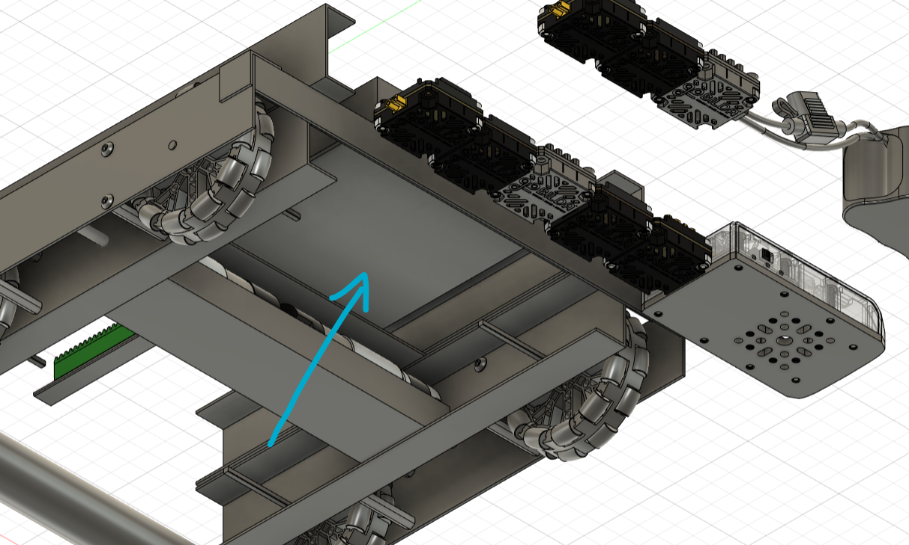
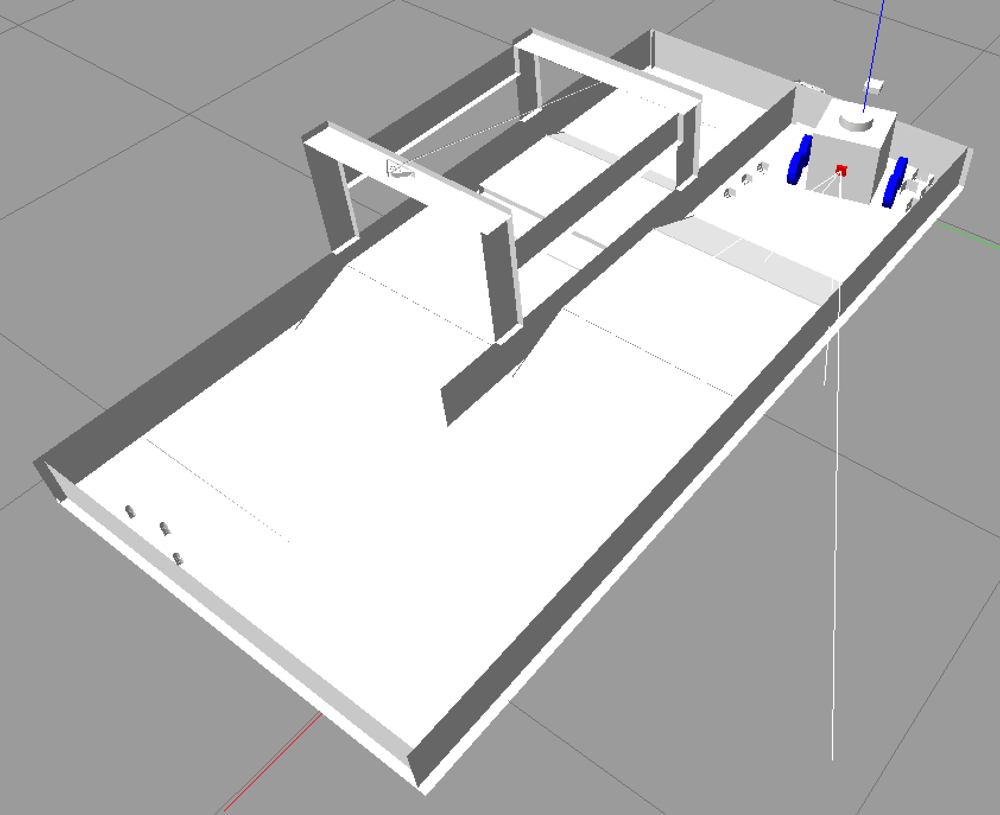
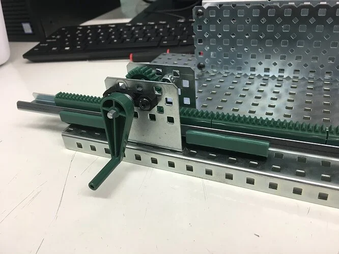
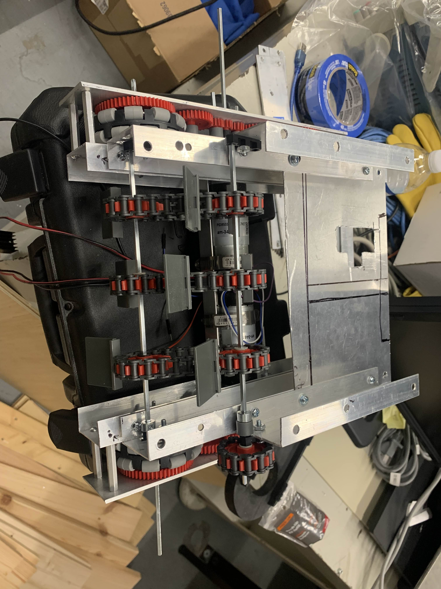
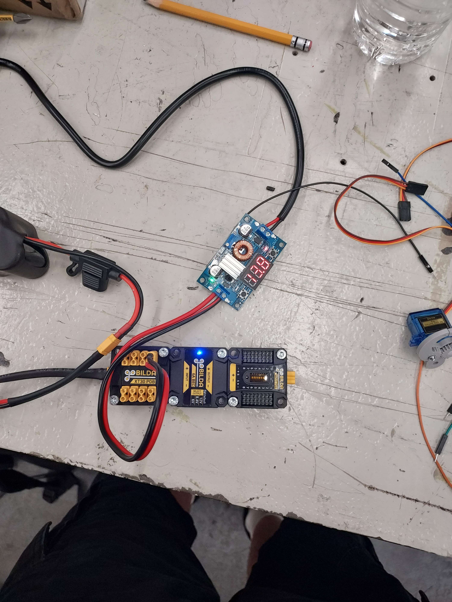
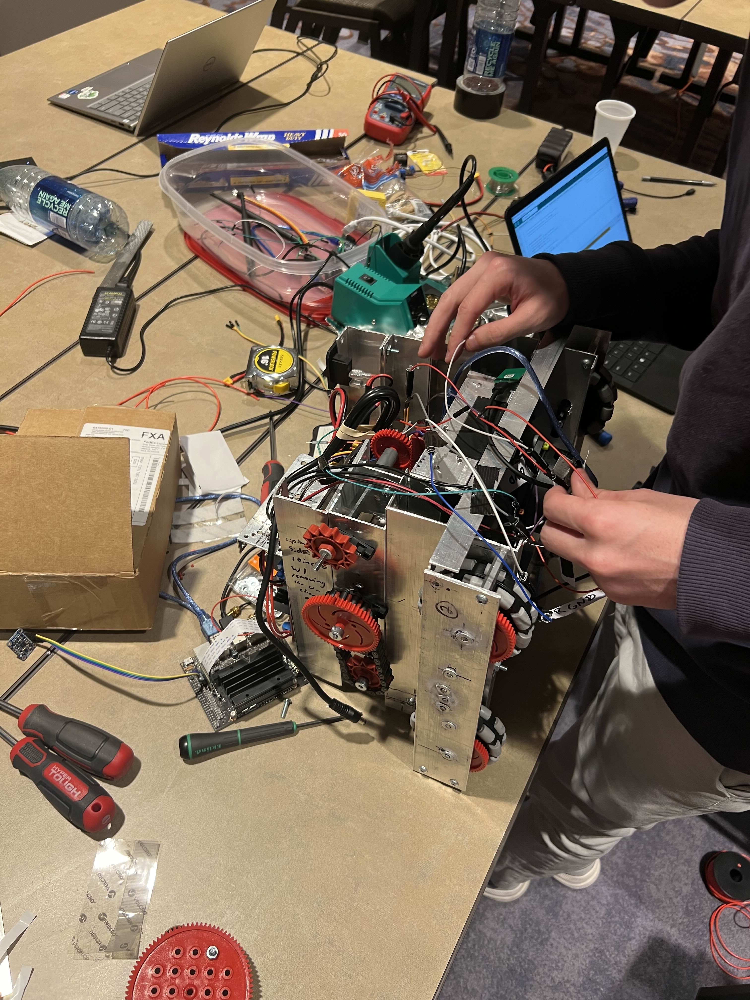

SEC Robot
A robot designed for IEEE Southeast Conference Hardware Competition. The robot was designed to be to complete task such as picking up and moving objects in given areas. The course had a zipline that the robot had to traverse and a ramp that the robot had to climb to get to the zipline. I was the hardware lead for the project. I worked on long side of the hardware team to 3D model the full robotic design including all sub-sections. After the 3D modeling was done I created a Bill of Materials (BOM) for the metal and other components needed to build the robot. I lended a hand in the electrical testing which involved motors and buck converters. During the design process I cut down aluminum into smaller protions using a band saw and drimel tool plus I drilled holes into the aluminum for the drive train. Worked on the installation of sheet metal for the layers.

Demo
Short clip showing robot mobility testing.
Gallery







